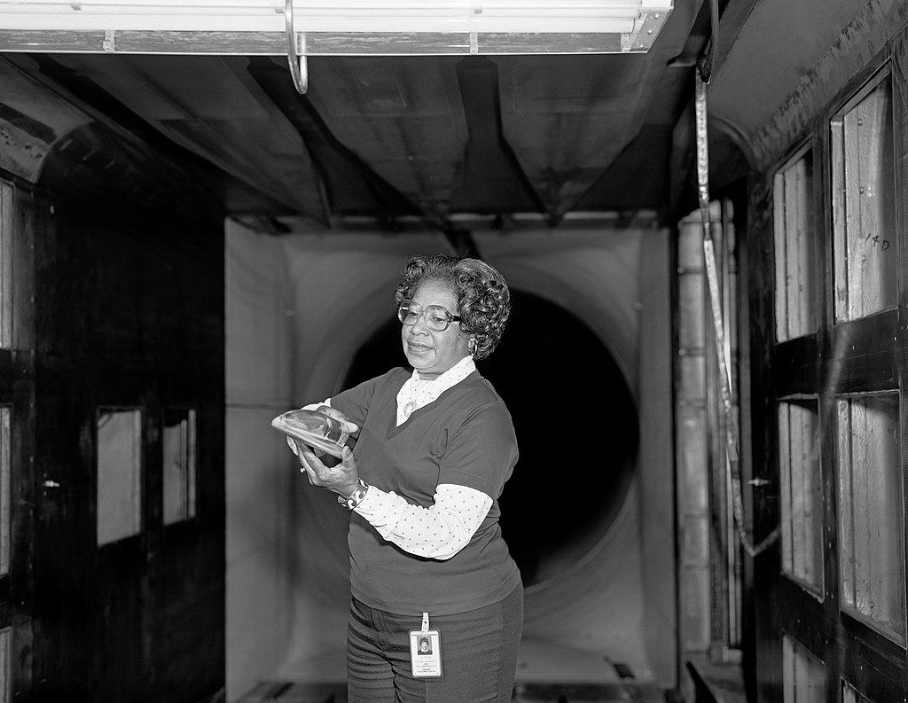

Mary Winston (Jackson, el apellido por el que es más conocido, lo adoptó más tarde al casarse) nació en Virginia, Estados Unidos, el 9 de abril de 1921. La segregación racial era el día a día en aquel momento y lugar. Winston se graduó en la Universidad de Hampton (un centro solo para alumnos negros) en 1942 con un doble título de Matemáticas y Física. Pronto obtuvo un trabajo como profesora de matemáticas en Maryland.
Cuando en 2021 la NASA renombró su cuartel general de Washington con el nombre oficial de Mary W Jackson NASA Headquarters, Mary Winston Jackson llevaba 16 años fallecida. Jackson recorrió cada escalón de la jerarquía de la agencia espacial estadounidense, desde una simple computadora en la división del Área Oeste, segregada por razas en aquel momento, hasta convertirse en supervisora y la primera mujer afroamericana ingeniera de la NASA.
Tras dos años en el equipo de computación, tuvo la oportunidad de trabajar junto al ingeniero Kazimierz Czarnecki en el Túnel de Presión Supersónica, un túnel de viento de 60 000 caballos de potencia capaz de generar vientos que doblaban la velocidad del sonido y que podían aplastar modelos de ingeniería cuando los ponían a prueba, con el objetivo de mejorar la resistencia de naves y aviones. El ingeniero le ofreció participar directamente en los experimentos que se llevaban a cabo en el túnel y tras varios meses de colaboración le sugirió participar en un programa de formación que le permitiese ascender del puesto de matemática al de ingeniera.
